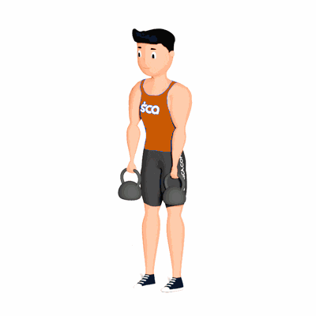

Stiff com Kettlebell

Esse exercício trabalha principalmente o fortalecimento dos músculos do glúteo, como também irá recrutar os músculos das costas e posteriores da coxa.
Ficha Técnica
Tipo: Musculação
Grupo Muscular: Glúteo
Aparelho: Nenhum
Músculos: Nenhum
Como realizar
- Para começar, fique de pé, bem ereto e com os pés afastados (na altura dos quadris);
- Em seguida, segure um kettlebell em cada mão e posicione-o ao lado do corpo;
- Projete o tronco para frente, o quadril para trás e incline levemente o joelho;
- Mantenha o abdômen e os glúteos contraídos. Desça junto os kettlebells até o chão, mantendo as costas retas e os braços esticados;
- Depois retorne a posição inicial e repita os movimentos pela quantidade de repetições orientada pelo professor(a).
 RC STORE
RC STORE